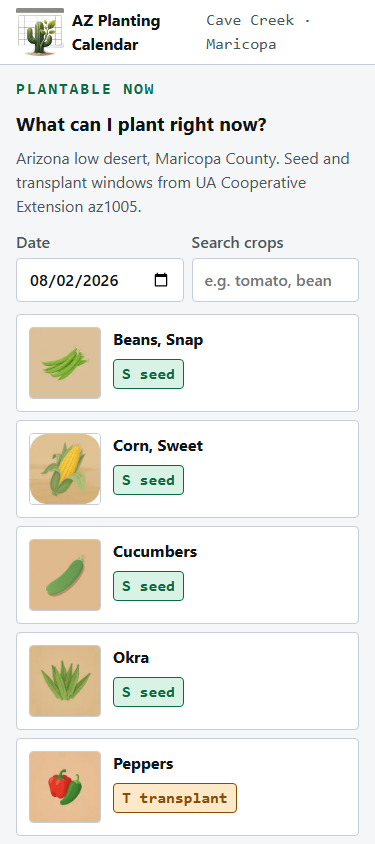
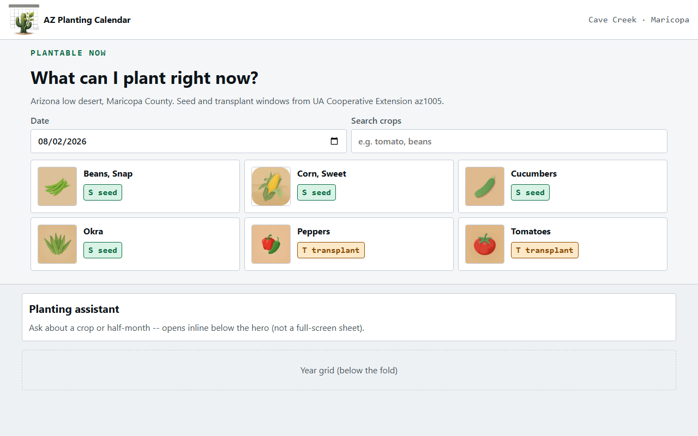
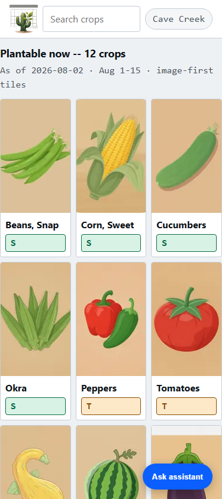
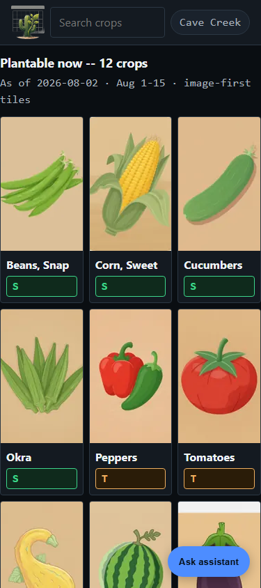
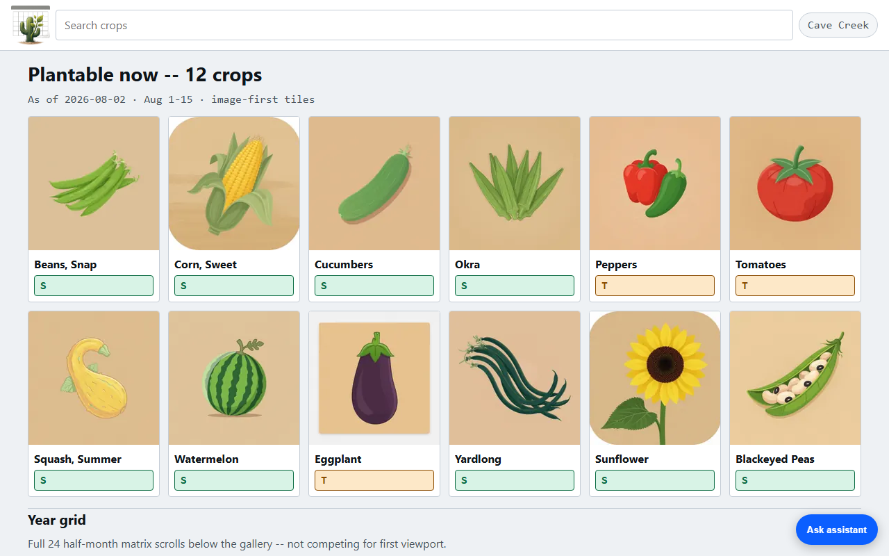
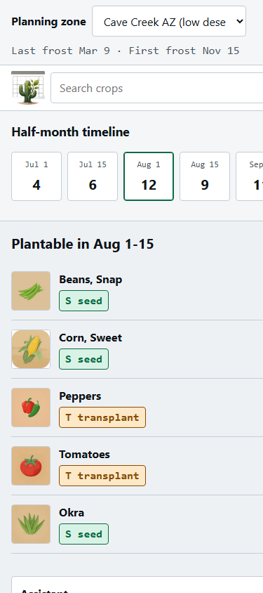
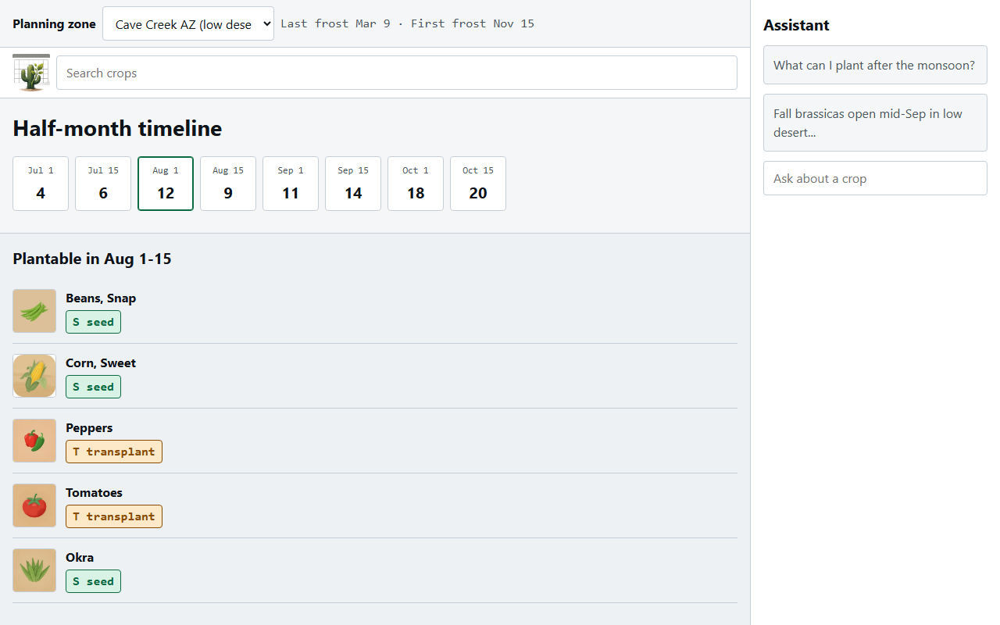

01 Focus hero
Dominates first viewport: title + date/search + text cards with art.
Zone in topbar. Assistant inline below hero. Year grid last.
Separable: hero copy/controls · card list · inline assistant




02 Gallery first
Dominates first viewport: dense image tile grid.
Search sticky next to brand; zone as pill. Assistant as FAB.
Separable: tile grid · sticky search chrome · FAB assistant




03 Timeline + rail
Dominates first viewport: horizontal half-month timeline with counts.
Crop list secondary. Zone full-width bar. Assistant = desktop rail.
Separable: timeline hero · list rows · zone bar · rail assistant


